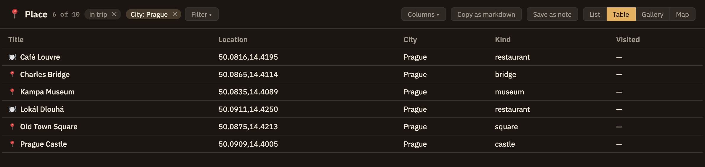
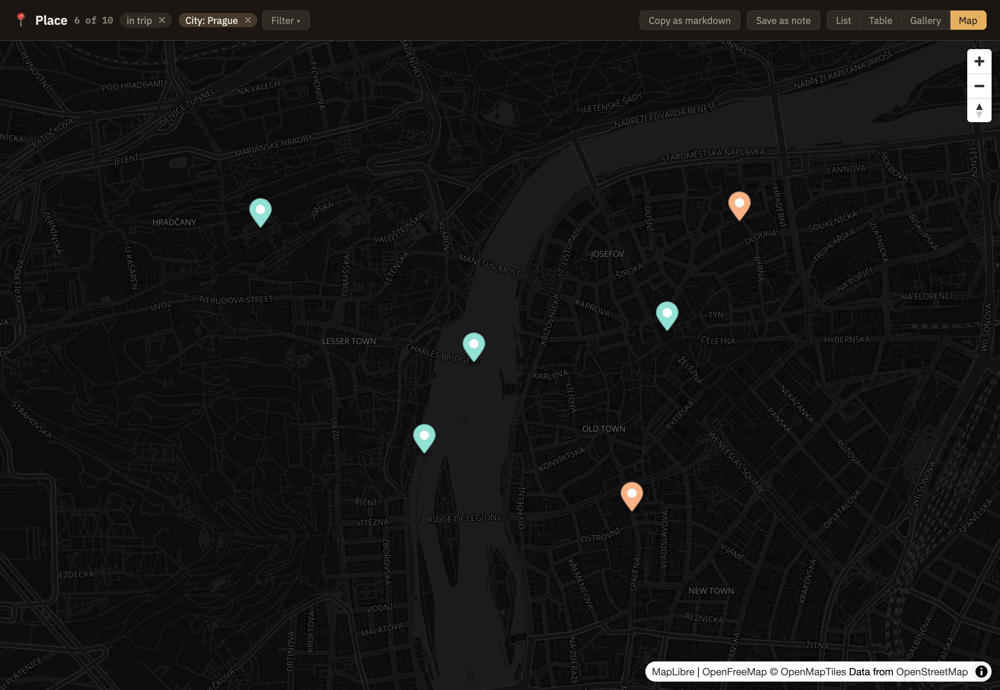
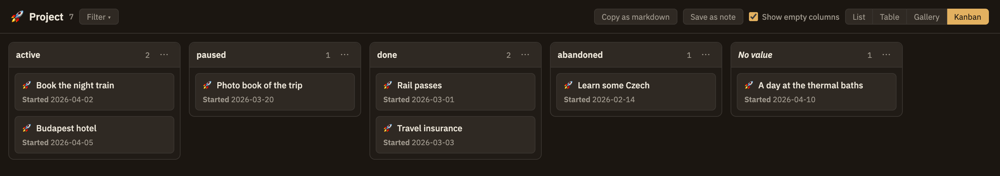

Docs/Left sidebar/Objects
Objects
The Objects panel is your project seen by kind rather than by folder. Every object type you have — Book, Person, Meeting — appears with a count of how many notes are of that kind, and expanding one lists them. It's a way to find things by what they are, without having filed them together in the first place.
The list of types
Each row is one type: its icon, its name, and how many notes carry it. Types with no notes yet are still listed, so creating your first Book is something you can find rather than something you have to remember exists.
Click a type to expand it and see its notes; click again to collapse. Clicking a note opens it in the editor. Each note carries its own icon, which matters when a type has more specific kinds beneath it — a Book that's really a Novel shows the Novel icon while still being counted as a Book.
Opening a type as a collection
The ⤢ button on a type row opens all of its notes in the main area, where they're more than a list. There are three ways to look at the same set, plus a map for a type with a location, a board for a type with a choice field, and a timeline for events:

Switching between layouts doesn't re-fetch anything; it's the same set of notes shown different ways. Clicking any row, card or pin opens that note — and Back brings you to the view again, just as you left it.
The map
A location is written as latitude, then longitude, separated by a comma — 50.087, 14.421 is the middle of Prague. Each note with a location gets a pin; a note with the field empty, or with something that isn't a location, simply isn't on the map. The map frames itself to fit all the pins.
Each pin takes the colour of the note's own type, so on a Place map a restaurant and a hotel look different at a glance. Hover a pin to see the note's title, and click it to open the note.
The Auto, Light and Dark buttons at the map's top left choose its look. Auto follows Minerva's appearance; Light or Dark keeps that map light or dark whatever the appearance, so you can have a light street map in a dark window. The map changes at once and keeps its pins and where you were looking. The choice belongs to the view: it is kept with the tab, and Save as note and Copy as markdown carry it into the note. A map embedded in a note shows the saved look without the buttons.

The pins are your notes, but the streets and coastlines behind them are fetched from the internet as you look. Offline, the map has nothing to draw them on.
The Kanban board
A board lays a type's notes out in columns by one of its choice fields — a field with a fixed list of choices, an enum in Settings → Object Types: one column per choice, one card per note. Project's status makes columns for active, paused, done and abandoned, so a board of your projects needs no setup. If the type has more than one choice field, Group by in the view's header picks which one makes the columns.
The columns come in the order the type lists its choices, each headed with how many cards it holds. An empty column stays on the board, since it's still somewhere to put a card. A note whose field holds something that isn't one of the choices — status: blocked, typed by hand — gets a column of its own after the type's choices, rather than being hidden. Notes that leave the field empty gather in No value, at the end, which appears only when some note has no value.
A card shows the note's icon, its title and the view's visible fields, leaving out the one the columns already show. Within a column, cards follow the view's sort. A filter on the grouping field limits the board to the columns you ticked; a filter on any other field leaves the columns alone and just thins the cards. Click a card to open its note.

Moving a card
Drag a card to another column and the note's field changes to that column's choice. Dropping it on No value takes the field out. Only that one line of the note changes, whether or not the note is open; if it's open in a tab with edits you haven't saved, you're asked whether to load the new version, as with any change made outside the editor. A drop back on the card's own column, or Esc while you're dragging, changes nothing, and finishing a drag never opens the note.
Without a pointer, right-click a card (or press ⇧F10 on it) and choose Move to ▸. It lists every column, including ones the board isn't showing, with the card's current column greyed out. Select several cards first — ⌘-click or ⇧-click — and it moves them all.
Each move is an ordinary save, so it shows up in Local History and can be restored from there like any other edit. While the board has focus, ⌘Z takes back the last move, and the one before it, and so on. If you've edited the note since, only the field is put back; if the field itself has changed again, the note is left alone and Minerva tells you so. ⌘Z on the board never touches the editor's own undo.
Arranging the columns
Drag a column's header sideways to put it somewhere else. Each header also has a ⋯ button (or right-click the header) with Move column left and Move column right. The order belongs to the view, not the type, so it never changes the type's list of choices, and choosing a different Group by starts the order afresh.
Show empty columns, beside Group by, is on to start with. Turn it off and columns with no cards drop out of sight; Move to ▸ still offers them.
By keyboard
The whole board is one stop on Tab, after the layout tabs. From there:
Moves and column changes are announced to screen readers — Moved Garden Shed to done.
Saving a board
Group by, the column order and Show empty columns belong to the view, like its sort and filters. They're kept with the tab, and Save as note (Minerva suggests a name like Project board) and Copy as markdown carry them into the note. A board in a note is for looking at: its cards open their notes, but they don't drag and have no Move to ▸, and the headers have no menus. A web page or PDF exported from the note, and a published site, show the same board read-only, its columns wrapping onto the page and each card a link to its note. Object views shows what a saved board looks like in the editor.
The timeline
A timeline puts a type's notes on a line of time, read from each note's date and, if it has one, its end. It's offered for the stock Event type and any type whose parent is Event, however far down: Minerva's own Meeting is a kind of Event, so a timeline of Events has your meetings on it, and a Meeting view can be a timeline of its own. A type you've made with Event as its parent — a Conference, say — gets one too.
![An Event view on its Timeline tab, fitted to April 2026, with the −, +, Fit and List buttons above a date axis. A bar with a dashed outline runs across the whole month for a spring festival dated only to April. Below it, in lanes so nothing overlaps: points for a packing call, a castle tour and a dinner, each at its time of day; bars for four days in Prague, the night train to Budapest, three days in Budapest and a day at the baths. Under the drawing, the Undated tray lists one trip with no date yet.](img/left-sidebar-objects-timeline.png)
Points and bars
An event with only a date takes up the time its date names: a day, if you gave a day. An event with an end as well runs from its date to its end. How each one is drawn depends on how far you've zoomed in. Anything too short to see at the current zoom is a point, and anything wider is a bar, with its title inside the bar when it fits and beside it when it doesn't. A day-long event is a point when you're looking at a century and a bar when you're looking at a week. A time of day (2026-10-05T14:30) is a moment, so it stays a point.
Hover over an event, or move to it with the keyboard, and a card shows its fields and its dates. Click it to open the note.
Dates that aren't exact
A date can be as coarse as you know it. 1969 means the whole of 1969 and 1969-07 the whole of July, so the event covers that stretch, drawn hatched with a dashed outline to show it's approximate. The hover card says so, and a screen reader reads it out with the event. If an event has an exact start and an approximate end, only the end's stretch is hatched.
Years before 1 CE are written with a minus sign, counting the way astronomers do: 0000 is 1 BC and -0043 is 44 BC. That's one less than the BC number, because there's no year zero in BC counting. The timeline shows them as BC, in its axis labels too, so -0043-03-15 reads Mar 15, 44 BC. It can draw any year from 99,999 BCE to 99,999 CE.
Event's date and end are datetime fields, so they can carry a time of day as well. That's what puts two events on the same day in order: a 9:00 meeting is drawn before a 14:30 one, and the keyboard reaches them in that order. A date with no time covers the whole day.
Lanes
Events that would overlap, labels included, are stacked into lanes, one below the other, so nothing is drawn on top of anything else. Zooming in spreads events out, so they need fewer lanes. The lanes are worked out again on every zoom, but panning never moves an event to a different lane.
The Undated tray
Events the timeline can't place are listed in the Undated tray under it, each with the reason: No date, a date that couldn't be read (1969-02-30), or one outside the years it can draw. Nothing is left out without a word, and clicking one opens it so you can fix it.
An end that comes before its date, or that isn't a date at all, doesn't send the event to the tray. The event is drawn at its start as if it had no end, and its hover card flags the end that was ignored.
Zooming and panning
The timeline opens fitted to all its dated events. Scroll or pinch to zoom in or out around the pointer. Drag, scroll sideways, or hold ⇧ while scrolling to pan. The − and + buttons above the drawing zoom around the middle, and Fit shows every dated event again. If the view has a range filter on date, Fit stays within it. Finishing a drag never opens the event under it. The axis labels follow the zoom, from years down to hours and minutes.
The range you're looking at belongs to the view. It's kept with the tab, so switching to the table and back, or going Back to it, brings you to the same stretch of time.
By keyboard
The drawing is one stop on Tab. From there:
Each event is announced by its title and dates, such as Moon landing, Jul 20, 1969, and a bar's description includes its end.
As a list
The List button beside the zoom buttons swaps the drawing for a list of the same events, in the same order, with the same dates, each marked (approximate) where it is and with any ignored end noted. It's there for anyone who'd rather read than look, whether you use a screen reader or just want the dates in a column. Press List again to get the drawing back. The Undated tray is under both.
Saving a timeline
The visible range goes with the view: Save as note (Minerva suggests Event timeline) and Copy as markdown keep it as a from and to, so the note shows the same stretch of time. A timeline still fitted to its events saves no range and fits itself whenever it's shown. A timeline in a note can be stepped through and opened, but not zoomed or panned. A web page or PDF exported from the note, and a published site, show a still timeline of the saved range, with each event a link to its note, approximate dates marked as approximate, and the undated events listed after it. A very crowded timeline is drawn with its first 30 lanes and a note of how many more events there are. Object views shows what a saved timeline looks like in the editor.
A timeline is for seeing how things fall across time, whether that's hours, years or centuries, and how they overlap. A calendar, with a month of days in a grid, is a different layout, and Minerva doesn't have one yet. For now, a timeline zoomed in to a week or a month is the nearest thing.
Just one folder's objects
To see only the objects in part of your thoughtbase, right-click a folder in the Notes tree and choose View Objects. It lists each type found in that folder and everything under it, with how many there are — plus the more general types they belong to, so a folder of restaurants offers both Restaurant and Place. Pick one and its view opens showing only that folder's notes; the tab is named for the folder (Place · trip/prague). The view opens as a table; switch layouts as you like. The in trip/prague ✕ chip in the view's header widens it back to the whole thoughtbase. The thoughtbase's own menu — right-click the top row of the Notes tree, or the empty space below it — has View Objects too, covering your whole thoughtbase.
If you rename or move the folder later, its views follow it: views saved in notes and view tabs you have open now point at the folder's new place, so they keep showing the same notes.
Filtering by a field
Use Filter in a view's header to narrow it by one of the type's fields. For a text, choice or link field, tick the values you want from the ones that actually appear — each shown with how many notes have it — so a map of places can show only those whose city is Prague. Location fields aren't offered. For a number or a date, give a lowest value, a highest value, or both; a date range can be as coarse as a month (2026-05) or a year, and each end takes in the whole of what it names, so a highest value of 2026-05 keeps every day of May. Dates are compared as points in time, so times written with different time zones, and years before 1 CE (-0043 is 44 BC), fall in the right order. Sorting a date column works the same way. Filters on different fields all apply at once, and a note with the field left empty is left out. Each active filter shows as a chip: click it to change it, or its ✕ to remove it. The count then reads 2 of 3, so you can see how much is hidden.
If a type has a parent — Novel's parent being Book — then asking for Books gives you the Novels too. The count on the Book row includes them, and so does its table.
Saved views
Once you've arranged a type's view the way you like it — a map of places, or a table sorted by rating with three columns showing — use Save as note to keep it as a note. You're asked for a name (Minerva suggests one, like Restaurant map), and a new note is created at the top of your thoughtbase with the view embedded in it, live: it shows the current objects every time you open it, arranged exactly as you saved it. Because it's an ordinary note, you can move it, rename it, link to it, or add your own writing around the view.
To put the view into a note you already have, use Copy as markdown instead and paste it where you want it. What's copied is the same live view that Save as note embeds — the same layout, sorting, columns, folder and filters — so it shows the same thing.
Export CSV saves the notes the view shows as a spreadsheet file: a Title column and one column per visible field, in the view's order. Dates are written in their ISO form (2026-10-05T14:30) rather than as shown, so another program can read them back.
A view saved from a folder keeps that folder, and a filtered view keeps its filters. In the note's preview, in a web page or PDF exported from it, and on a published site, you see just those objects — the filter controls and the folder chip belong to the view's own tab, so they don't appear there. A Markdown export keeps the view as the text you'd see in the editor. To change what a saved view shows, open the type's view, arrange it again, and save it anew. Object views has more on views inside notes.
Views saved before Save as note used to be listed under their types in this panel. They no longer appear. To get one back, set the view up again and use Save as note.
Excerpts
Below your types sits Excerpts — the passages you've saved from sources. It isn't an object type you defined, but it belongs here for the same reason: it's a kind of thing you accumulate, and you often want to browse all of it at once.
Where types come from
The types listed here are defined in Settings → Object Types, where you can add fields, change an icon, or create your own. A note becomes one of them by carrying a type: property — see Typed notes.